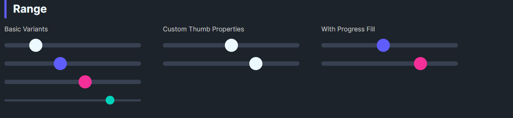

DaisyRange
Overview

DaisyRange is a styled slider with 8 color variants, 4 size presets, and customizable thumb/track colors. It exposes thumb size and optional progress fill properties while inheriting standard Control behavior including IsEnabled. It supports step-based value snapping and full keyboard navigation.
Variant Options
| Variant |
Description |
| Default |
Neutral thumb/track. |
| Primary / Secondary / Accent |
Brand-aligned thumb colors. |
| Success / Warning / Info / Error |
Semantic thumb colors. |
Size Options
| Size |
Track Height |
Thumb Size |
| ExtraSmall |
4 |
16 |
| Small |
6 |
20 |
| Medium (default) |
8 |
24 |
| Large |
12 |
32 |
Value Control Properties
| Property |
Type |
Default |
Description |
Value |
double |
0 |
Current value of the slider. |
Minimum |
double |
0 |
Minimum value. |
Maximum |
double |
100 |
Maximum value. |
StepFrequency |
double |
0 |
When > 0, values snap to nearest step (e.g., 5 → snaps to 0, 5, 10...). |
SmallChange |
double |
1 |
Value change for arrow key navigation. |
LargeChange |
double |
10 |
Value change for Page Up/Down navigation. |
Additional Styling
| Property |
Description |
ThumbBrush |
Color of the thumb. |
ThumbSize |
Diameter of the thumb (default 24). |
ProgressBrush |
Color for filled track (left side). |
ShowProgress |
Toggle displaying the filled portion (theme groundwork present). |
Keyboard Navigation
DaisyRange is focusable (IsTabStop=True) and supports full keyboard navigation:
| Key |
Action |
| ← / ↓ |
Decrease by SmallChange |
| → / ↑ |
Increase by SmallChange |
| Page Down |
Decrease by LargeChange |
| Page Up |
Increase by LargeChange |
| Home |
Jump to Minimum |
| End |
Jump to Maximum |
Quick Examples
<!-- Basics -->
<controls:DaisyRange Value="40" Maximum="100" />
<controls:DaisyRange Value="60" Maximum="100" Variant="Primary" />
<controls:DaisyRange Value="20" Maximum="100" Variant="Secondary" Size="Large" />
<!-- Compact accent -->
<controls:DaisyRange Value="80" Maximum="100" Variant="Accent" Size="ExtraSmall" />
<!-- With step snapping (values snap to 0, 10, 20, ..., 100) -->
<controls:DaisyRange Value="50" Maximum="100"
StepFrequency="10"
SmallChange="10"
LargeChange="20"
Variant="Primary" />
<!-- Custom thumb -->
<controls:DaisyRange Value="50"
ThumbSize="28"
ThumbBrush="{ThemeResource DaisySuccessBrush}"
ProgressBrush="{ThemeResource DaisySuccessBrush}"
ShowProgress="True" />
Tips & Best Practices
- Match
Size to surrounding inputs; Smaller for dense forms, Large for touch-friendly layouts.
- Use semantic variants to convey meaning (e.g., Error for risk settings).
- Set
ShowProgress=True and ProgressBrush to highlight completed range segments.
- Keep
Minimum < Maximum; bind Value for reactive UI updates.
- Use
StepFrequency for discrete value selection (e.g., percentage steps, volume levels).
- Set
SmallChange equal to StepFrequency for consistent keyboard behavior.